Overview
Shade Splash is a cooperative 1D color-matching game designed for physical interaction, where two players work together to recreate a target color through coordinated motion and communication. Each player controls a different color, and their combined movements determine the final blended shade displayed in real time. The project explored how physical controllers and embodied interaction can encourage collaboration rather than competition.
Game Mechanics
Players begin in opposite corners of a rectangular play space. A Target Color displayed at the top of the screen indicates the color they must recreate, while a Current Blend at the bottom shows the real-time result of their combined inputs. Each player uses a motion-based controller that acts like a balance wheel: holding the controller parallel to the ground keeps the character stationary, while tilting it left or right moves the character accordingly. Players must coordinate their movements to mix colors accurately. Once they believe the correct shade has been achieved, both players must press their corresponing buttons on their controller to lock down on their desired shade. If successful, the game advances to a new round with a different target color and more shade choices.
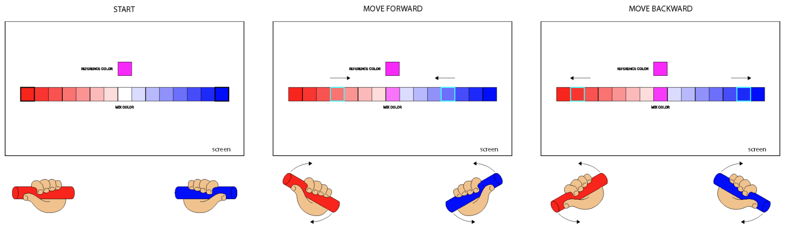
Controller Enclosure Design
The physical controllers were designed to resemble paint buckets, reinforcing the theme of mixing colors. Multiple iterations of the bucket geometry were developed, starting all the way from a scrappy prototype (Figure 2) to a fully functional 3D printed version. The many iterations of this controller were used to refine ergonomics, confortability, ease of use, and to find the best way to represent a paint bucket while still funcitong as a game controller.
Paint Bucket Iterations:
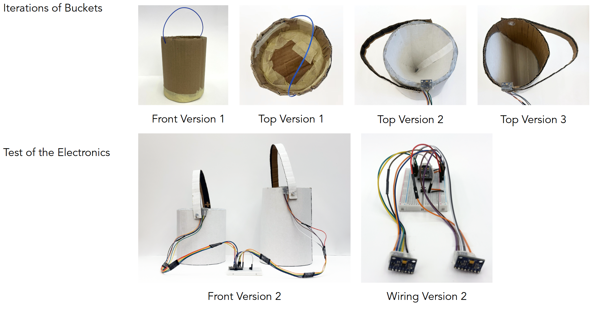
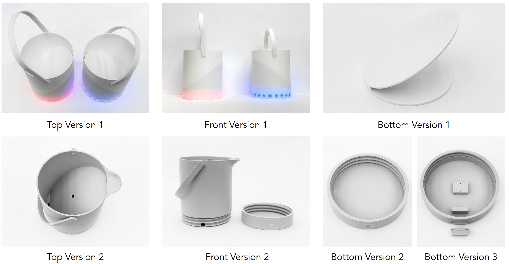
Final Design Exploded Views:
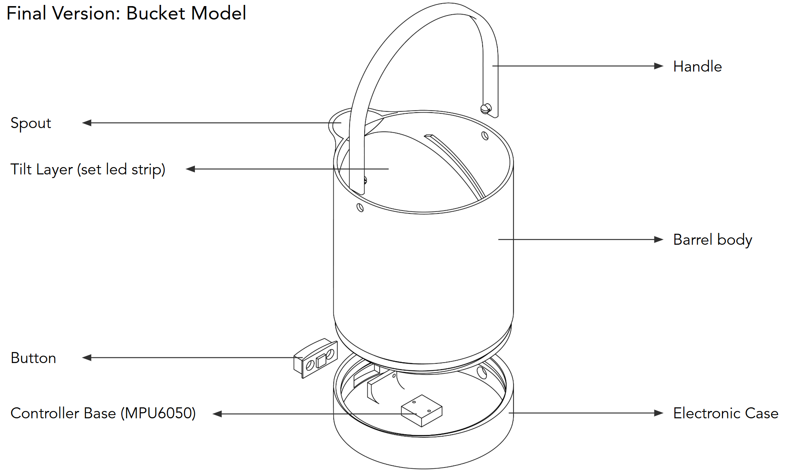
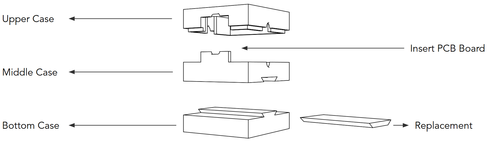
Diffusive Layer/LED Layer:
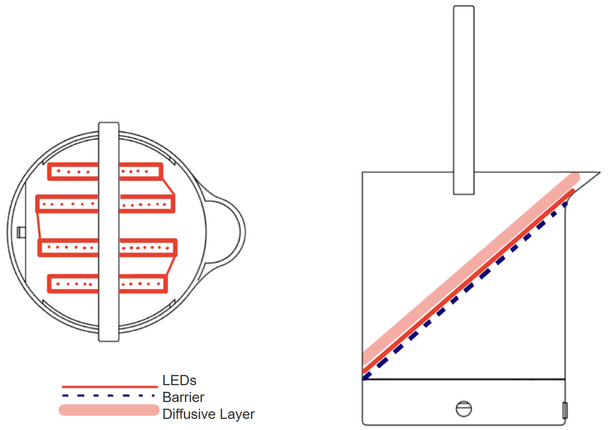
Fluid:
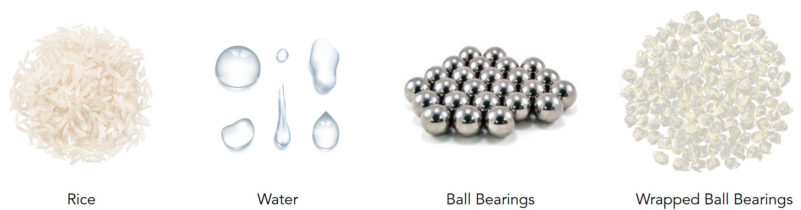
Electronic Design
Each controller housed a 25 count strip of LEDs, a button, and a MPU6050(gyroscope). All wires from each controller housing fed into a second housing enclouser which an Arduino Micro Pro and connected all the electronics on a self-soldered protoboard. The controllers are powered through the type-c port on the Arduino Micro Pro and serves as an output to configure the game on a screen.
Protoboard Enclosure:
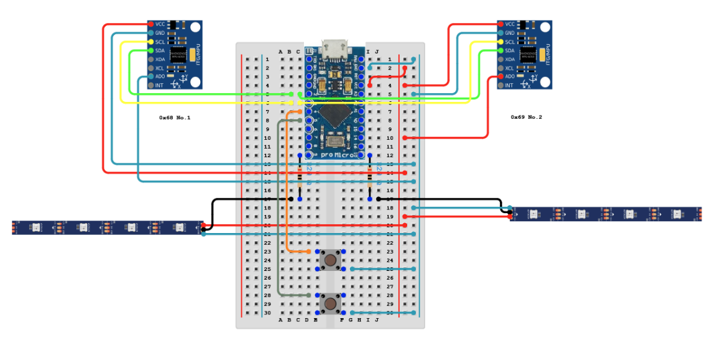
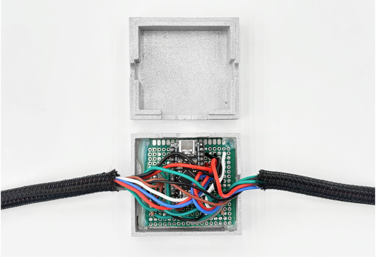
My Contributions
I led the design and fabrication of the physical game controllers, focusing on translating digital game mechanics into intuitive, embodied interaction. Using Fusion 360, I designed and iterated on multiple paint-bucket-inspired enclosures, refining the external form and internal layout to improve ergonomics, balance, and component fit across several versions. I also contributed to rapid prototyping efforts through cardboard mockups and 3D-printed iterations, using each build to inform design revisions related to usability and assembly.
On the electronics side, I helped integrate and test the controller hardware, including the Arduino Pro Micro, MPU6050 gyroscope, LED strips, push buttons, and custom PCB. I supported wiring layout and enclosure integration, working through multiple internal configurations to reduce complexity and improve reliability. To enhance the tactile realism of the controllers, I participated in testing different “fluid” materials—including rice, water, ball bearings, and wrapped ball bearings—to emulate the feeling of pouring paint while maintaining durability and consistency during gameplay.
Renderings
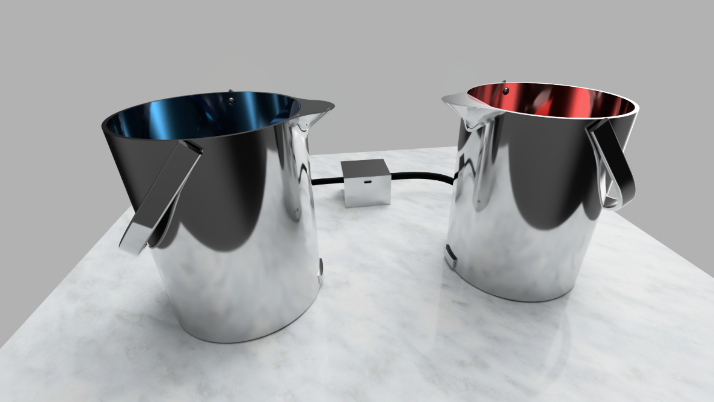
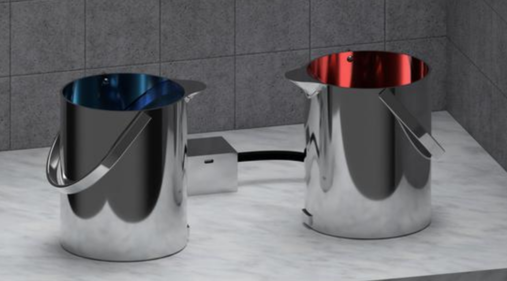
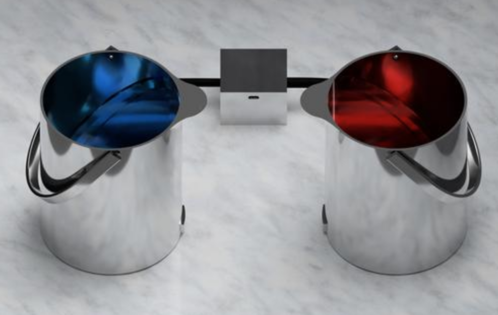
More Pictures
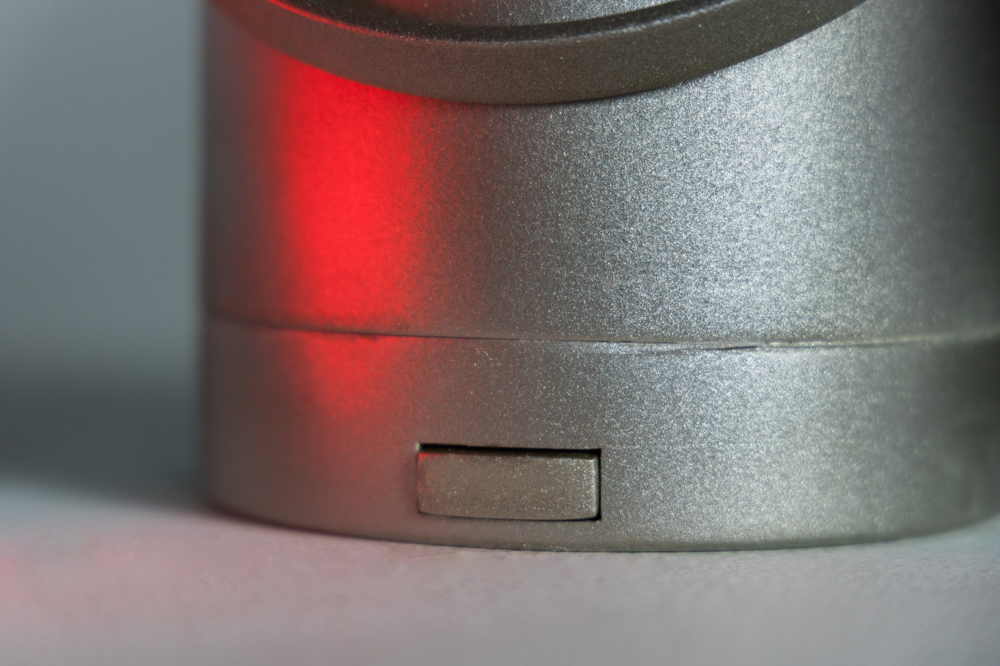
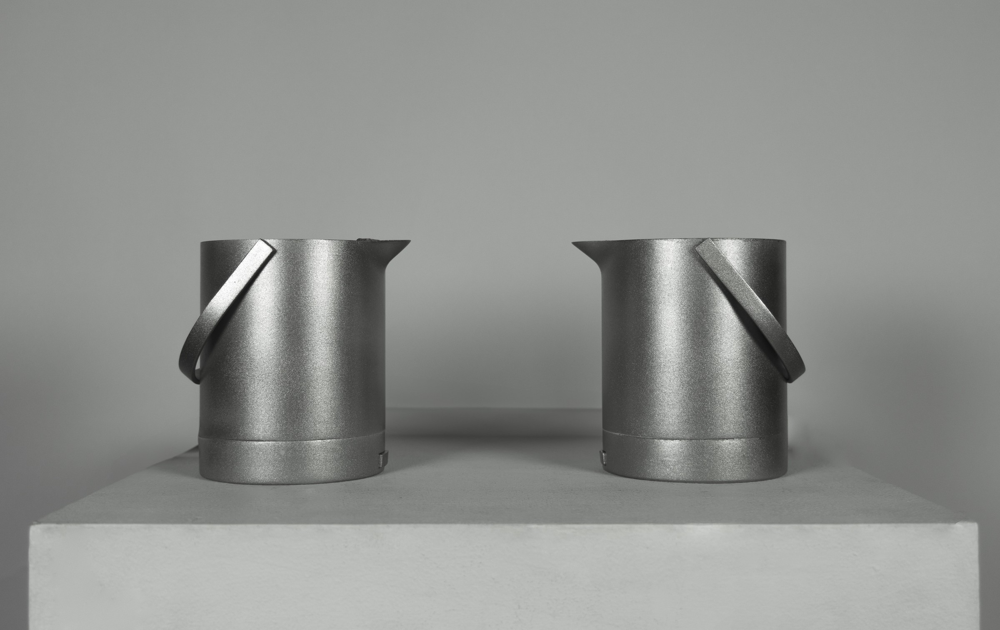
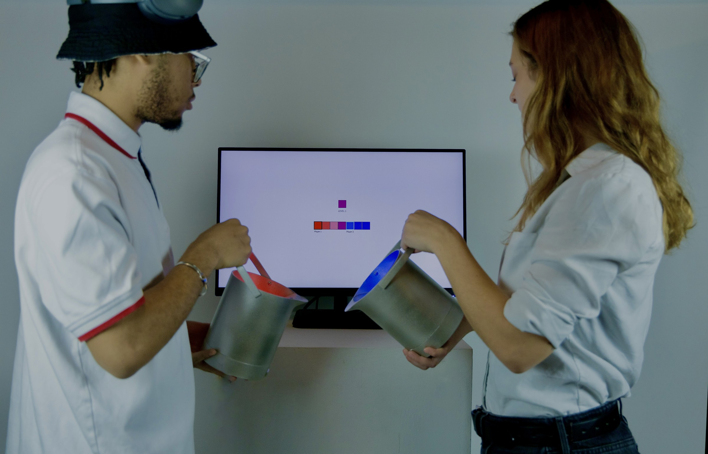
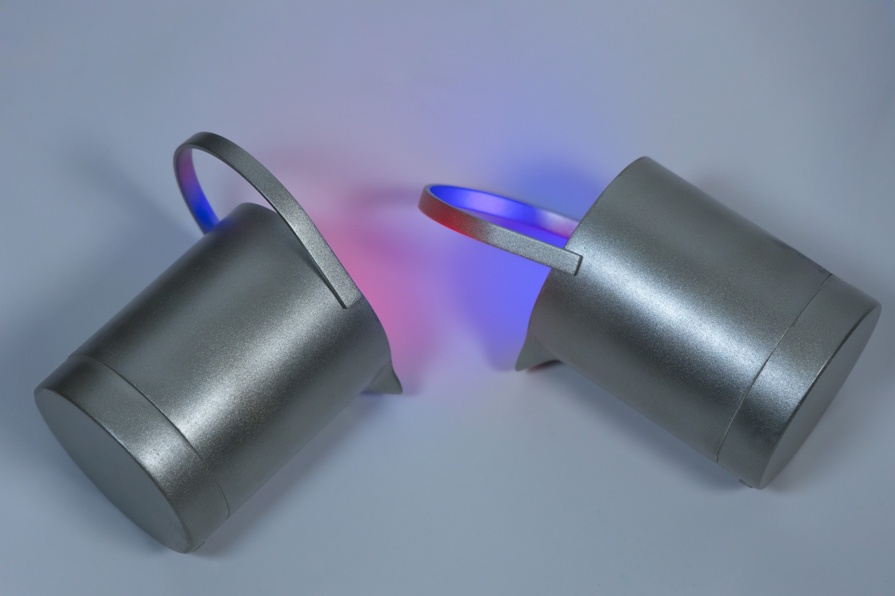
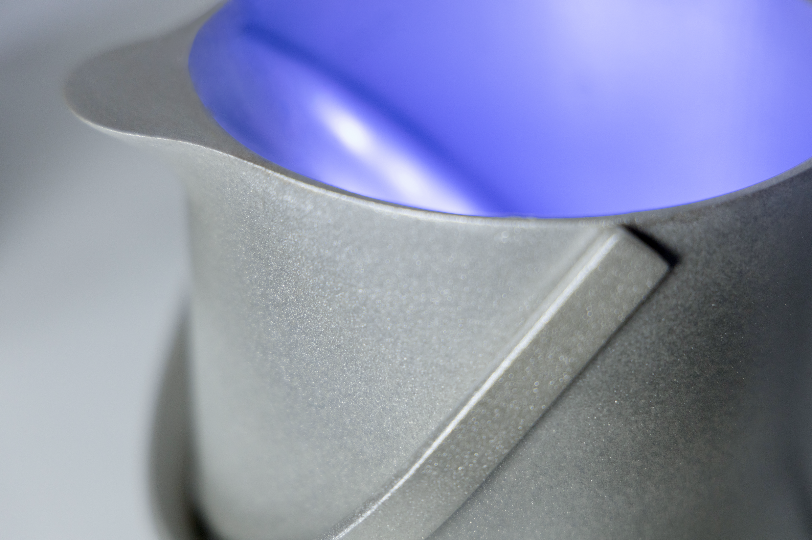
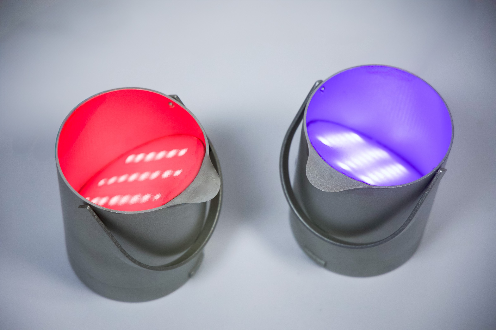
Motion processing and interaction
The motion-control implementation used an exponential moving average with a smoothing coefficient of 0.25 and hysteresis thresholds of 12° to enter movement and 8° to return to neutral. This approach reduced unintended switching near the neutral position while preserving responsive physical interaction.